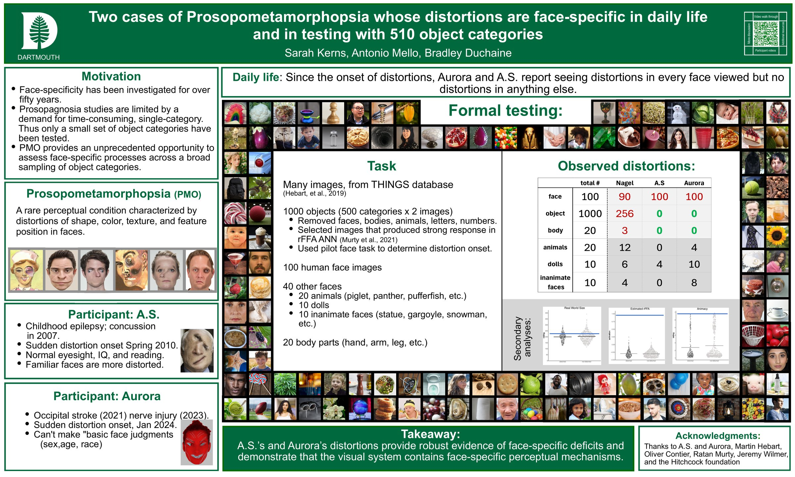

Kerns, S., Mello, A., & Duchaine, B. (2025). Two cases of prosopometamorphopsia whose distortions are face-specific in daily life and in testing with 510 object categories. Poster, VSS 2025, St. Pete Beach, FL. Journal of Vision, 25(9), 2911. https://doi.org/10.1167/jov.25.9.2911
I made two versions of this poster. They present the same data in two different ways: this Table version (v1) shows the results as a table of observed distortions, and the Bar version (v2) shows them as a bar chart.
Abstract
For more than 50 years, neuroscientists have investigated the visual system for the presence of specialized face processing mechanisms. Face-specific deficits in prosopagnosia have provided key support for the existence of face-specific processes. However, the number of object categories tested alongside faces has been limited by practical constraints, and prosopagnosic self-assessment of object recognition in daily life is challenging. As a result, clear dissociation between impaired face perception and intact object perception has been documented in only a small number of object categories. To expand the number of face/object comparisons, we assess face and object perception in participants with prosopometamorphopsia (PMO), a perceptual deficit characterized by distortions of the shape, feature position, texture, and color of faces. As with prosopagnosiacs, some PMO participants have perceptual deficits for both objects and faces. Here, five PMO participants were presented with 100 photographs of faces and 1020 paired photographs of objects from the THINGS database (Hebart et al., 2019). To increase the chances of finding object distortions, a computational model of fusiform face area activation (Murty et al., 2021) was used for image selection. Participants indicated whether they saw distortion in each image. Three participants reported daily-life distortions in both faces and objects, and also demonstrated face and object distortion in testing, with 2.8%, 27.4%, and 36.7% of object images and 42%, 90%, and 95% of face images, respectively, distorting. In contrast, two participants, A.S. and Aurora, both reported universal face distortion in daily life, with zero object distortion. Their self-report and test scores were consistent, with 100% of faces and 0% of objects distorted during testing. These dissociations in face and object perception, both in daily life and formal testing, provide a strong demonstration of face-specific deficits and compelling support for face-specific mechanisms in the human visual system.
Journal of Vision, 25(9), 2911 (VSS 2025 abstract)

Full-size image Bar version (v2) of the poster ← Face Perception